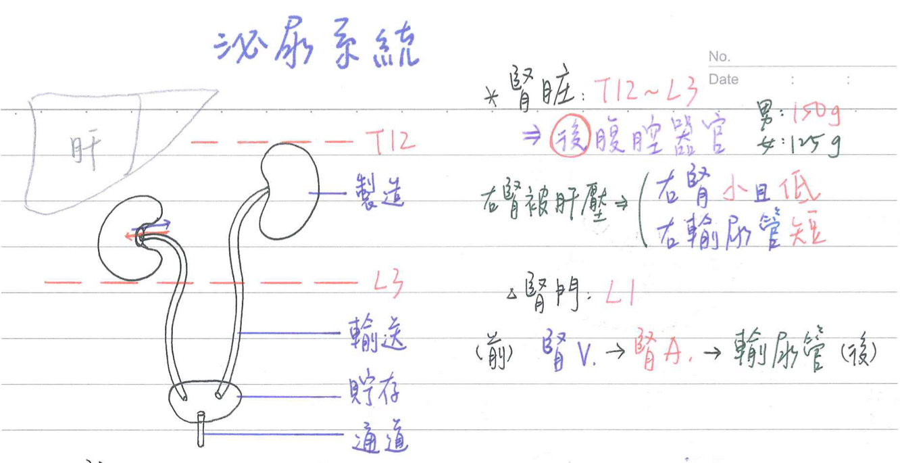
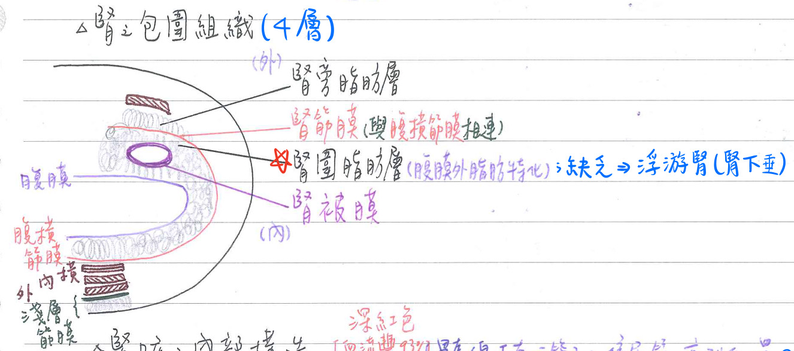
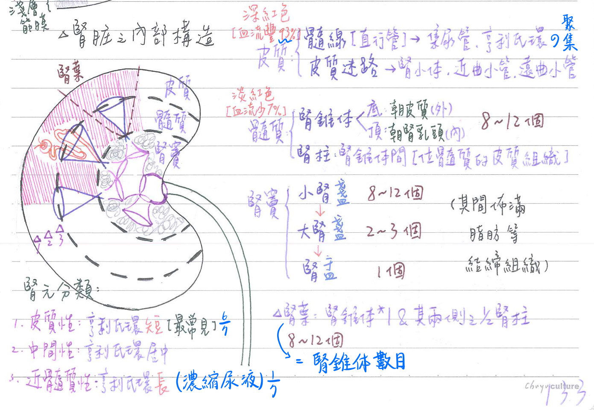
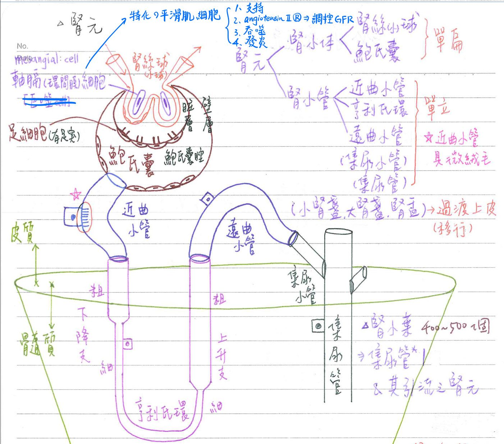
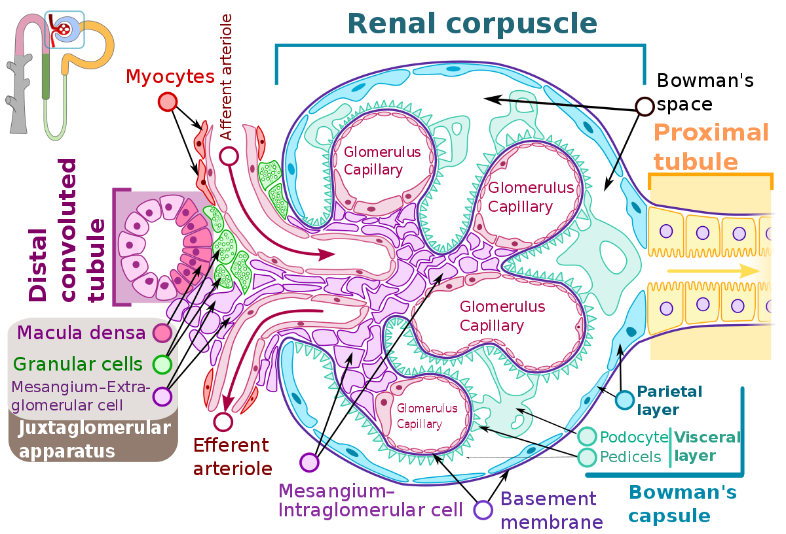
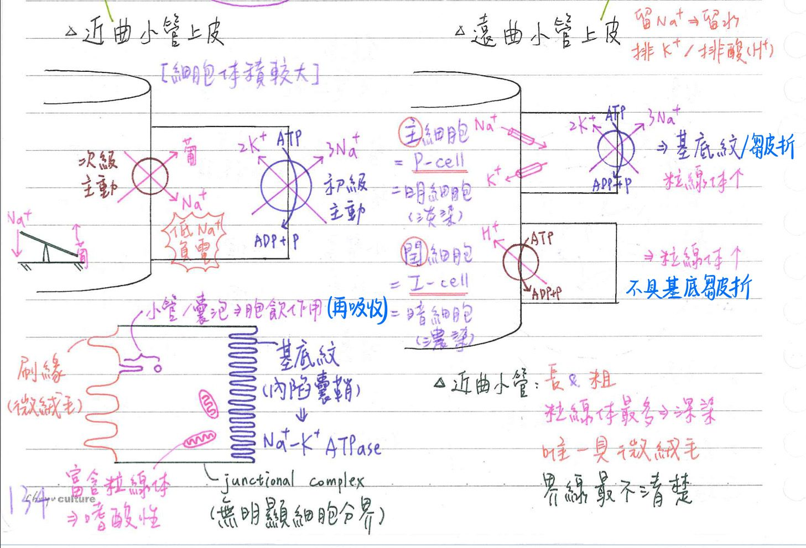
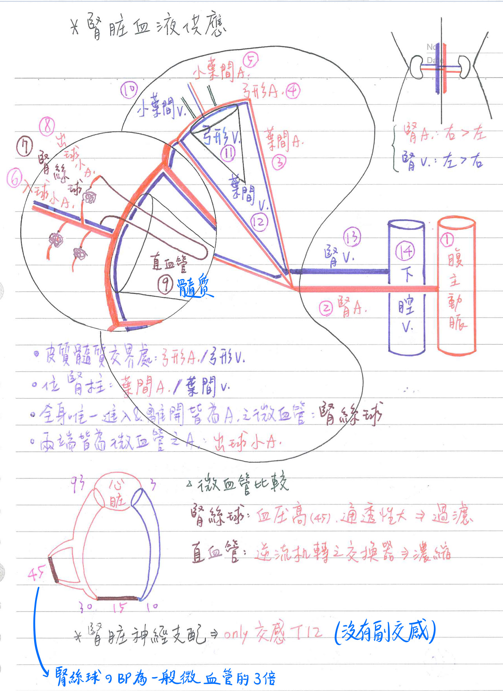

🚰 泌尿系統-腎
腎-大體構造
腎-大體解剖
基本特徵
- 形狀：蠶豆形
- [重點]大小：12 x 6 x 3cm；右腎較左腎稍小
- [重點]重量：男150g/個；女125g個
- 位置：位於T12~L3；右腎較左腎稍低(因肝臟右葉之故)
- 屬後腹腔器官(retroperitoneal organ)
包圍組織：司固定、保護作用
- 內層：腎被膜(capsule)
- 中層：腎圍脂肪層(perirenal fat)
- 腹膜外脂肪(extraperitoneal fat)之特化
- 此層最重要，缺乏→易造成浮游腎(floalting kidney；腎下垂)
- 外層：腎筋膜(fascia)：
- 與腹橫筋膜相連
- 最外層：腎旁脂肪層(pararenal fat)
腎門(hilum)
- 位於腎內側縱面，約L1-L2高度(跨幽門橫線)
- 進：腎A(中間)
- 出：腎V(前方)、輸尿管(後方)
- 前→後：VAU
- 長度：
- 腎A[左<右]：腹主動脈偏左
- 腎V[右<左]：下腔靜脈偏右
- 輸尿管[右<左]


腎-內部構造
髓質(medulla)：血流佔7%；淡紅色
- 腎錐體(renal pyramid)：8〜12個/腎
- 錐體底(base)：在外側，朝皮質(cortex)
- 錐體頂(apex)：在內側，朝腎乳頭(renal pailla)
- 腎乳頭頂端：為篩孔區(area cribrosa)，具集尿管開口
- 腎柱(renal column)：位於腎錐體間(cortical tissue within the medulla)
- 髓質再分為外(outer)髓質&內(inner)髓質
皮質(cortex)：血流最豐(93%)；深紅色
- 髓線(medullary ray)：直形管構造
- 為位於皮質的集尿管&亨利氏環[=直小管(straight tubule)]之聚集
- 即一條皮質集尿管(cortical collecting duct)&其所引流位於皮質之亨利氏環之聚集
- 皮質迷路(cortical labyrinth)：髓線間之構造
- 具腎小體(=腎小球+鮑氏囊)、近端曲管及遠端曲管
腎竇(sinus)
- 小腎盞(minor calyx)：8~12個/腎
- 大腎盏(major calyx)：2~3個/腎
- 腎盂(pelvis)：1個/腎
- 其間佈滿脂肪等結締組織

[重點]腎葉及腎小葉
腎葉(lobe)：8~12個/腎
- 一個腎錐體(medullary pyramid)
- 其底部相關之皮質(associated cortex)
- 其兩側之腎柱(1/2 of adjacent renal column)：2 x 1/2個腎柱
- 腎葉數目=腎錐體數目
腎小葉(lobule)：400~500個/腎
- 一根集尿管(collecting duct) & 其所引流之腎元(nephron)：一個集尿管約引流2500個腎元
- =髓線(腎小葉之中軸)+其周圍皮質
腎-顯微構造
腎元(nephron)=腎單位：100萬〜125萬個/腎；=腎小體+腎小管
- 腎小體(renal corpuscle)=馬氏小體(Malpighian)：位於皮質
- 腎絲球(glomerulus)=腎小球(微血管)
- 具環間膜細胞(mesangial cell)=軸膈細胞(特化之平滑肌細胞)：支持、調控GFR、吞噬、發炎
- 鮑氏囊(Bowman's capsule)=腎絲球被囊
- 臟層(visceral layer)：緊臨腎絲球
- 上皮具初級足突、次級足突，又稱足細胞(podocyte)
- 壁層(parietal layer)：單層扁平上皮
- 鮑氏囊腔：臟層、壁層之間
- 臟層(visceral layer)：緊臨腎絲球
- 腎小體兩個開口：
- 血管端(vascular pole)：位於入球小A進入及出球小A離開腎絲球處
- 泌尿端(urinary pole)：位於近端曲管起自處鮑氏囊，即血管端之相反端
- 腎絲球(glomerulus)=腎小球(微血管)
- 腎小管(renal tubule)
- 近端曲管(proximal convoluted tubule, PCT)：位於皮質
- 亨利氏環(loop of Henle)[=直小管(straight tubule)]：
- 下降枝(descendinglimb)：位於皮質、髓質
- 粗段(thick segment)→細段(thin segment)
- 上升枝(ascending limb)：位於皮質、髓質
- 細段(thin segment)→粗段(thick segment)
- 下降枝(descendinglimb)：位於皮質、髓質
- 遠端曲管(distal convoluted tubule, DCT)：位於皮質
- DCT先注入集尿小管(collecting tubule)，再注入集尿管(collecting duct)
- 泌尿小管(uriniferous tubules)=腎小管+集尿小管
集尿管(collecting duct)：位於皮質、髓質
- 集尿管於腎乳頭注入小腎盞(minor calyx)
腎元之分類
- 皮質性(cortical)=被膜下(subcapsular)：最常見(佔6/7)
- 腎小體位於被膜下皮質，亨利氏環較短
- 近髓質性(juxtamedullary)：與濃縮尿液有關(佔1/7)
- 腎小體位於近髓質處，亨利氏環較長
- 中間性(intermediate)(少數)
- 腎小體位於皮質中間處，亨利氏環長度居中


腎-內襯上皮種類
- 腎絲球、鮑氏囊壁層：
→單層扁平上皮(simple squamous)(內皮) - 近端曲管、亨利氏環、遠端曲管、集尿小管、集尿管：
→單層立方(simple cuboidal)上皮- 近端曲管具微絨毛
- 小腎盞、大腎盞、腎盂
→過渡上皮(transitional cell)=變形上皮=移行上皮- 過渡上皮形狀可因張力大小而改變
腎-內襯上皮細胞特色
近端曲管上皮
- 細胞體積較大
- 具刷緣(brush border)=微絨毛(microvilli)：增加20倍吸收面積
- 頂端具小管/囊泡(canaliculi/vesicle)
- 經細胞運輸(transcellular transport)→胞飲小泡(pinocytotic vesicle)↑；再吸收蛋白質
- 具基底紋/內陷囊鞘(basal striation/invagination)：
→富含初級主動運輸/次級主動運输蛋白(Na+, K+-ATPase↑)→細胞内帶負電、低Na+ - 呈嗜酸性(acidophilic)：富含粒線體
- 因細胞側膜彼此交錯(interdigitation)，故無明顯細胞邊界
- 具結合複體(junctional complex)=終棒器(terminal bar)：
結合複體=胞橋小體+緊密結合+黏附結合
- 近端曲管：
- 長度較長、管徑較粗
- 細胞最深染(嗜酸性)、界限最不清楚
- 粒線體最多、唯一具微绒毛之腎小管
遠端曲管末段&集尿管上皮
- 明細胞(light cell)=主細胞(principle cell)=P-cell：數量較多
- 淡染
- 具基底皺褶(basaling folding)：富含鈉鉀幫浦(Na+/K+-ATPase)
- 具單一織毛(single cilium)
- 留鈉排鉀
- 粒腺體也多
- 暗細胞(dark cell)=閏細胞(intercalated cell)=I-cell：數量較少
- 濃染(dark stain)
- 不具基底皺褶
- 具多量粒線體
- 分泌H+ (H+-ATPase)

腎-血液供應
動脈
腹主動脈：身體中線偏左
→腎A(renal artery)：[長度：右>左]
→葉間A(interlobar artery)：位於腎柱
→弓形A(arcuate artery)：★[108-2]位於皮質髓質交界處
→小葉間A(interlobular artery)：走在腎小葉之間
腎絲球周圍的小血管們
→入腎絲球小動脈(afferent arteriole)
→腎絲球(=微血管)(glomerulus)
→出腎絲球小動脈(efferent arteriole)
→腎小管周圍微血管(peritubular capillary)：皮質
→直血管(微血管)(vasa recta)：髓質
靜脈：和動脈同名而伴行
→小葉間靜脈(interlobular vein)
→弓形靜脈(arcuate vein)
→葉間靜脈(interlobar vein)
→腎靜脈(renal vein)：[長度:左>右]
→下腔靜脈(inferior vena cava)[身體中線偏右]
血管特性
- 進入及離開腎絲球(=微血管)：小動脈
- 兩端皆為微血管的動脈：出球小動脈
- 腎絲球(=微血管)：因血壓高、血流大、通透性大、出球小動脈阻力大
→故利於進行過濾作用 - 直血管(=微血管)：
- 主位於髓質腎小管、集尿管周圍
- 因U形排列，故利於作為逆流機轉之交換器，參與濃縮尿液

腎-神經支配
- 腎臓僅具交感神經支配：T12(經下內臓N)→腎神經節
造成入球小動脈收縮→腎絲球過濾率↓ → 尿量↓- 無神經支配之腎臟，亦能維持正常功能
- 腎臟無副交感神經
腎-淋巴引流
- 淺部系統：引流外皮質至腎被膜(renal capsule)
- 深部系統：引流其他部位至腎竇(renal sinus)
- 兩系統具多數吻合(anastomosis)
腎-功能
腎-功能概覽
- 製造尿液
- 調節體液(水份、電解質、酸鹼值)的平衡
- 排出廢物(代謝產物、毒物、藥物)
- 製造荷爾蒙
- 活化25-(OH)-D3 → 1,25-(OH)2-D3：助Ca吸收↑
- 製造紅血球生成素(EPO)：促RBC生成↑
- 缺氧刺激腎臓製造EPO作用於骨髓一促RBC生成
- 製造腎活素(renin)：調節水份及Na+、K+平衡
尿液形成三大步驟
- 過濾(filtration)：腎小體
- 再吸收(readsorption)：腎小管
- 分泌(secretion)：腎小管
近腎絲球装置(juxta-glomerular apparatus, JGA)
JGA-構造
- 近腎絲球細胞(JG cell=入球小動脈之平滑肌細胞)：
- 偵測入球小動脈中H2O↓ ⇒ 製造腎素(renin)↑
- 緻密斑細胞(macula densa cell；位於亨利氏環上升支和遠曲小管交界處)：
備註
FC是寫位於distal straight tubule，但是趙神跟何宣都是寫位於DCT⇒查了一下資料後，比較精確的說法應該是位於上升支&DCT的交界處
- 偵測濾液中Na↓ / K↑ ⇒ 調節JG cell之腎素分泌
- 腎絲球外軸細胞(extraglomerular mesangial cell, Lacis cell)：
- 作為腎絲球血管極之墊褥(polkissen=pole cushions)
JGA-功能：經RAA(renin-angiotensin-aldosterone)維持H2O、Na+、K+之平衡
- H2O↓・Na+↓、K+↑ ⇒ 腎活素(renin)↑
⇒促血管張力素原(angiotensinogen)活化為血管張力素I (angiotensin I)
⇒血管張力素I 經轉化酶(ACE)轉化為血管張力素II (angiotensin II)
⇒促腎上腺皮質(絲球帶)製造醛固酮(aldosterone)↑
⇒作用於遠端曲管末段 & 集尿管之主細胞(P-cell)
⇒留 Na+/H20、排K+
⇒維持H2O及 Na+/K+之恆定 - 血管張力素原(angiotensinogen)：由肝臓製造
- 轉化酶(ACE)：由肺臟製造
過濾作用
正常數值：
- 心輸出量(cardiac output ,CO)：5000 cc/min
- 腎血液流量(renal blood flow, RBF)：1250 cc/min
- 腎血漿流量(renal plasma flow)：680cc/min
- 腎絲球過濾率(glomerular filtration, GFR)：125 cc/min
- 尿液流量(urine output, UO)：1 cc/min
- 一天尿量約1440cc
濾膜結構：三層結構；血球及大蛋白無法濾過
- 微血管內皮：容許分子量40,000以下通過
- 腎球微血管：為開窗型(fenestrated)微血管，其通透性為全身最大
→約為骨骼肌微血管通透性的50〜100倍
- 腎球微血管：為開窗型(fenestrated)微血管，其通透性為全身最大
- 腎絲球基底膜：容許分子量160,000以下通過
- 作為物理屏障(physical barrier) & 離子選擇濾膜(ion-selective filter)
- 可細分為3部份，三明治(sandwitch)排列
- 內薄板(lamina rara interna)：富含陰離子(polyanion)
- 緻密板(lamina densa)：富含type IV膠原纖維(collagen)
- 外薄板(lamina rara extera)：富含陰離子(polyanion)
- 臟層鮑氏囊上皮(=足細胞)：容許分子量4,000以下通過
- 相鄰足細胞(podocyte)之二級突起(secondary procss)交錯形成
→過濾隙孔(filtration slit，寬約25mm，裂隙上有一過濾隙膜(filtration slits membrane)
- 相鄰足細胞(podocyte)之二級突起(secondary procss)交錯形成
軸隔細胞(mesangial cell)：特化之平滑肌細胞
- 具吞噬作用(phagocytosis)，清除卡於濾膜之物質
- 提供足細胞之結構支撑(structural support)
- 調節總過濾表面積(具ANP-R促舒張；具Angiotensin R促收縮)
- 分泌：產生細胞外基質(ECM)、發炎物質(IL-1& PDGF)以調節發炎反應
→在腎絲球損傷中扮演重要的角色
逆流機轉(裝置)(countercurrent mechanism)
- 構造：
- 增強器(multiplier)：
- 組成：亨利氏環下降枝、亨利氏環上升枝、集尿管
- 功能：建立濃度梯度(溶質主要為Nacl；其次為尿素)
→使間質之濃度梯度自300 mOsm/L增至1200 mOsm/L
- 交換器(exchanger)：
- 組成：直血管(vasa recta)
- 功能：維持濃度梯度
→將直血管將多餘的H2O交換移除，以免破壞已建立之濃度梯度
- 增強器(multiplier)：
- 功能：濃縮尿液機制 ⇒ 藉調控尿液的濃稀及多寡，以維持體内H2O的恆定